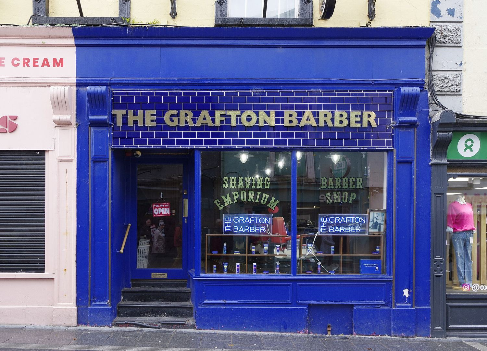

Города
Килкенни
Средневековая миля камня и ремесла

Килкенни — самый маленький город Ирландии и самый средневековый: он вытянут вдоль километровой улицы, которую местные называют «средневековой милей», от собора до замка.
На одном конце — собор Святого Каниса с круглой башней, куда можно подняться за лучшим видом в графстве; на другом — замок Килкенни, шестьсот лет бывший домом Батлеров.
Между ними — сохранившиеся купеческие дома, чёрный камень местного мрамора и традиция дизайна и ремесла, превратившая город в мастерскую Ирландии: Kilkenny Design Centre, совет по ремёслам и целый ряд мастерских и студий.